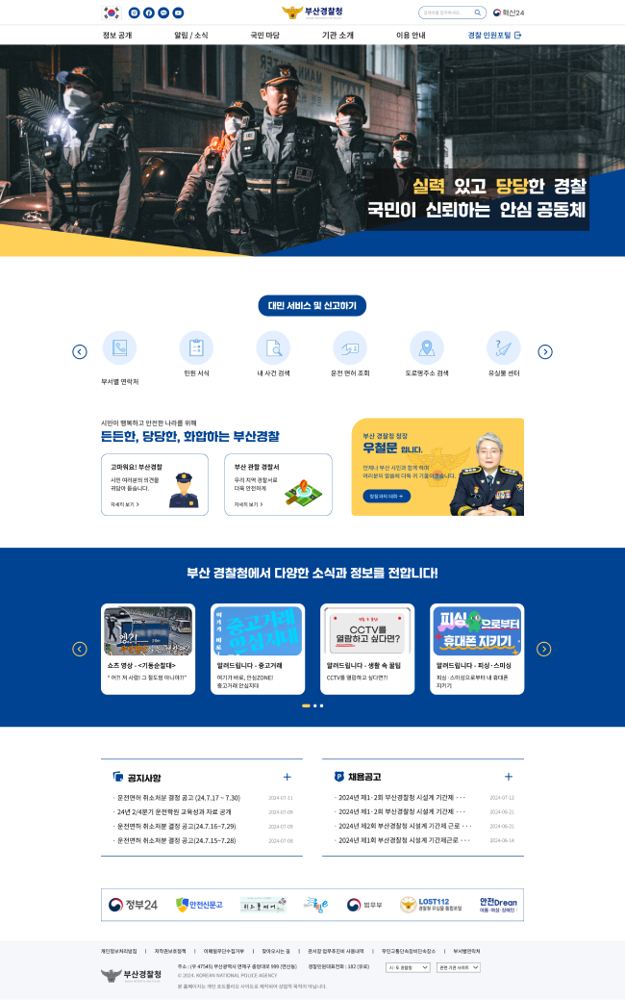

MAIN PAGE SOLUTION
기존 사이트의 문제점 파악을 기반으로 개선하였습니다.
개선된 네비게이션
메인 메뉴에 마우스를 갖다 대었을 때 모든 서브 메뉴가 아래로 슬라이드 되도록 하였으며, 밑줄이 생기는 효과를 적용하였다.
주된 카테고리
사용자가 해당 경찰청 홈페이지를 접속했을 때 주로 이용하는 카테고리를 분석하여, 직관적인 아이콘과 함께 슬라이드 형식으로 배치하였다.
부산 경찰청에 말해주세요
부산 경찰청에 건의 사항이나 미담 사례, 청장과의 대화를 할 수 있도록 배치하였으며, 부산 지역 내의 경찰서 위치를 확인 할 수 있도록 같이 배치하였다.
부산 경찰청 자체 컨텐츠
기존 사이트에 배치되어 있던 '쇼츠 영상' 및 '알려드립니다'
컨텐츠를 한 눈에 볼 수 있도록 슬라이드 형식으로 배치하였다.
주요 공지 사항
공지 사항 및 채용 공고를 최신순으로 나열하였다.
관련 기간 사이트 및 시·도 경찰청
경찰청 업무와 관련 있는 사이트의 로고를 자동 슬라이드 되도록 하였으며, 푸터 부분에 각 지역의 경찰청 사이트로 이동할 수 있도록 카테고리를 배치하였다.